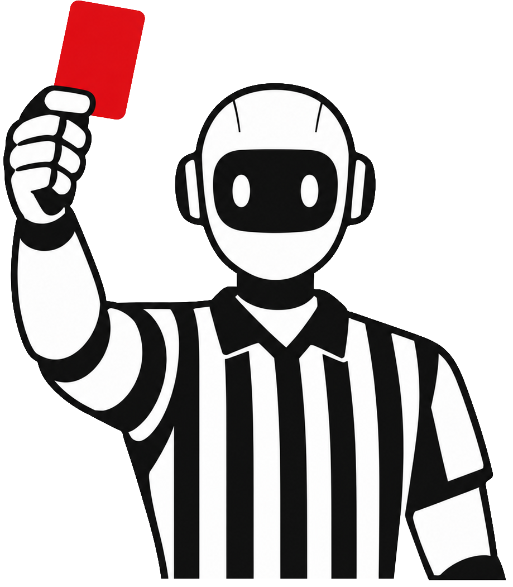
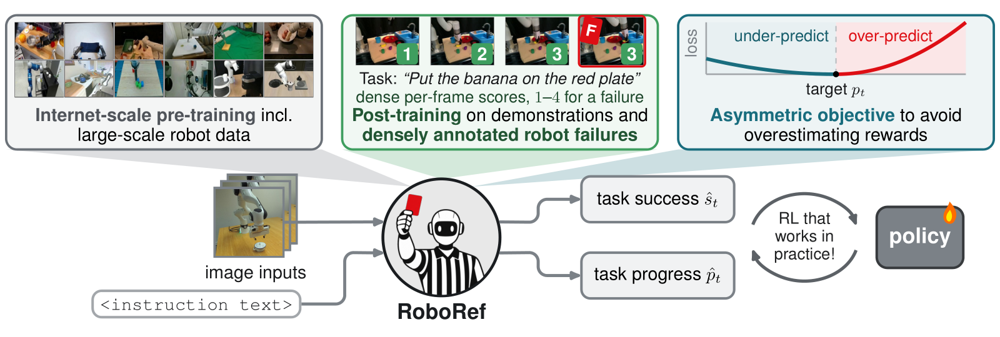
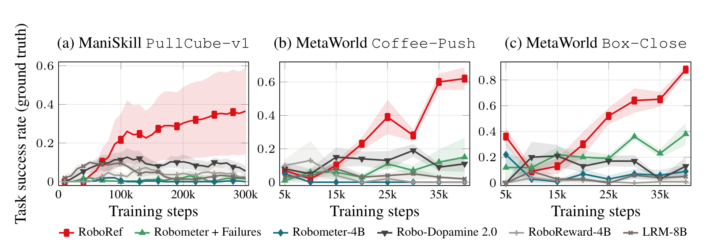
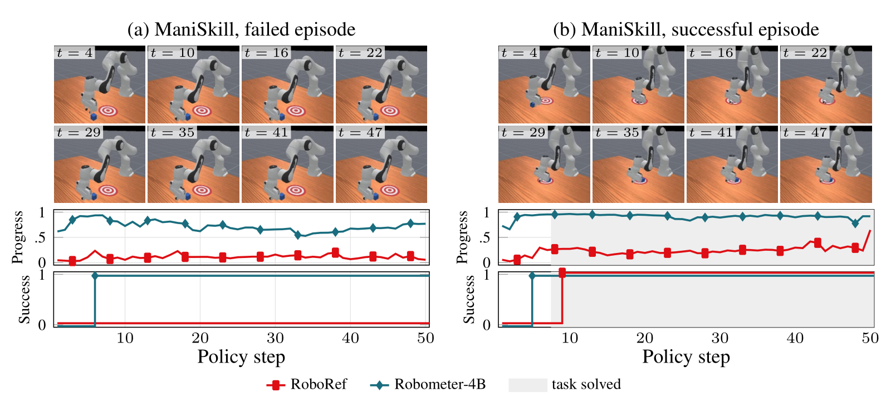
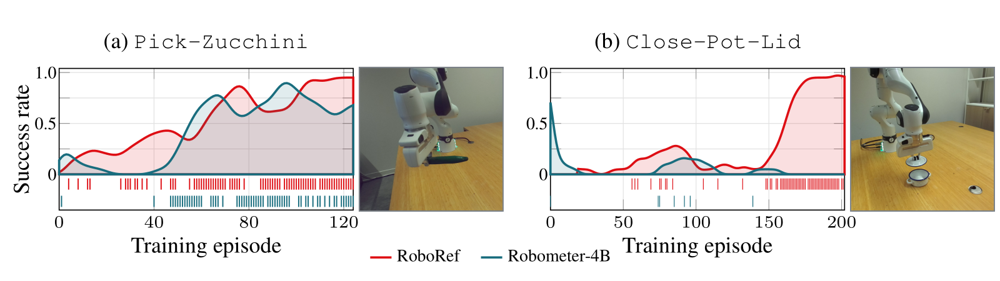

1University of Amsterdam 2Toyota Motor Europe 3NXAI
Correspondence: p.karageorgis@uva.nl
Reward models that lead on offline benchmarks can fail to train a policy at all. RoboRef learns from densely annotated failures and an asymmetric objective that punishes over-estimated rewards, and trains the strongest policies in simulation and on a real robot.
Reinforcement learning (RL) offers a general route for robots to learn to solve tasks from their own experience. However, designing the reward that guides this learning remains a bottleneck. Recent work therefore replaces hand-crafted reward functions with reward models fine-tuned from vision-language models (VLMs) on large robotic datasets, reporting strong prediction accuracy on offline benchmarks. Yet whether this accuracy carries over to successful RL training remains underexplored. We identify two gaps shared by most VLM reward models. First, the annotated robot data these models train on mostly contain successful behavior, which leaves them poorly equipped to judge the failures produced by a policy being optimized. Second, most models penalize over- and under-prediction of the reward equally, although false positives are the main cause of reward hacking, which poses a severe problem for downstream RL. We introduce RoboRef to close these gaps. To train RoboRef, we re-curate RBM-1M, a large-scale robot reward dataset, densely annotating its failures and adding new ones so that the model learns to score the failures it might encounter during RL. Furthermore, we introduce an asymmetric loss that penalizes over-prediction more harshly than under-prediction, yielding conservative rewards that are harder for a policy to exploit. We evaluate on offline metrics and downstream RL across three simulated benchmarks and two real-world manipulation tasks. We observe that the models that lead on offline benchmarks can fail to train a policy at all. RoboRef trains competent policies where these baselines never learn and delivers the strongest downstream performance, making it, to our knowledge, the state-of-the-art VLM reward model for robot RL.
RoboRef fine-tunes Robometer with two changes. Given a single camera view and an instruction, it predicts per-frame task progress and success, either of which serves as the reward.

Existing reward datasets mostly contain successes, so failures, exactly what an optimizing policy produces, are out of distribution. We re-curate RBM-1M into RBM-1M+: 648,714 per-frame labeled clips, 116,786 of them failures. Simulated failures get their progress from simulator state; real-world failures are scored by a two-stage VLM–LLM labeling pipeline.
A false positive plants a spurious goal that the policy will seek out and exploit; a false negative only slows learning. Our objective penalizes over-prediction more heavily, so the model settles below its targets.
Every reward model is frozen and queried zero-shot on tasks held out from training. RoboRef trains the strongest policy on every task, including ones where no baseline learns at all.

A policy seeks out whatever its reward model over-scores. Robometer-4B rates a failed episode near-complete and detects success within a few steps; RoboRef stays low until the task is actually solved.

PullCube-v1 episode.PullCube-v1| r̄fail ↓ | AUROC ↑ | |
|---|---|---|
| Robometer-4B | 0.72 | 0.43 |
| Robo-Dopamine 2.0 | 0.59 | 0.78 |
| RoboReward-4B | 0.25 | 0.56 |
| LRM-8B | 0.63 | 0.64 |
| RoboRef | 0.10 | 0.92 |
| r̄fail ↓ | AUROC ↑ | |
|---|---|---|
| Robometer-4B | 0.72 | 0.43 |
| + failure data | 0.24 | 0.66 |
| + asymmetric loss (RoboRef) | 0.10 | 0.92 |
r̄fail: mean reward in failed episodes. AUROC: separation of successful vs. unsuccessful steps.
On a Franka FR3, RoboRef is the only reward: no hand-designed reward, queried frozen and zero-shot from one camera view.

Close-Pot-Lid.| Zucchini | Pot lid | |
|---|---|---|
| Robometer-4B | 53% | 0% |
| RoboRef | 80% | 90% |
In Pick-Zucchini, the robot must pick up a zucchini from the table. In Close-Pot-Lid, it holds a lid and must place it on a pot; a slightly misaligned or too-high release fails. The policy only moves the arm: closing the gripper and lifting, or opening it to release the lid, is scripted at episode end.
Selected episodes, shown as the saved policy frames at 4 frames per second (not real time), with each model's logged progress, success and reward overlaid.
Pick-Zucchini · RoboRef · training episode 130 · successPick-Zucchini · Robometer-4B · evaluation episode 12 · successClose-Pot-Lid · RoboRef · training episode 185 · successClose-Pot-Lid · Robometer-4B · training episode 180 · failure@inproceedings{karageorgis2026roboref,
title = {RoboRef: A Foundation Reward Model Built for Robot RL, Not Offline Metrics},
author = {Karageorgis, Platon and Barcellona, Leonardo and Aljundi, Rahaf and Gavves, Stratis and Gumbsch, Christian},
booktitle = {NeurIPS 2026 Workshop on Post-Training Adaptation of Robot Foundation Models (RoboPAD)},
year = {2026}
}